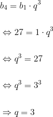

Exerciții și probleme rezolvate de tip Bacalaureat
- Această problemă a fost dată în sesiunea august - septembrie a anului 2013, pentru profilul mate - info, Subiectul I, exercițiul 1.
Bacalaureat Matematică 2013 | Mate - Info | Sesiunea august - septembrie | Subiectul I
Determinați rația progresiei geometrice  cu termeni reali, știind că
cu termeni reali, știind că  și
și 

Rația progresiei geometrice cu termeni reali este  .
.
- Această problemă a fost dată în sesiunea iunie - iulie a anului 2014, pentru profilul mate - info, Subiectul I, exercițiul 1.
Bacalaureat Matematică 2014 | Mate - Info | Sesiunea iunie - iulie | Subiectul I
Calculați suma primilor trei termeni ai progresiei aritmetice  știind că
știind că  și
și  .
.
Știm că:
 .
.
În cazul nostru avem:


- Această problemă a fost dată în modelul de subiect pentru anul 2016, pentru profilul mate - info, Subiectul I, exercițiul 1.
Bacalaureat Matematică 2016 | Mate - Info | Model de subiect | Subiectul I
Determinați numărul real  știind că numerele
știind că numerele  și
și  sunt, în această ordine, termeni consecutivi ai unei progresii aritmetice.
sunt, în această ordine, termeni consecutivi ai unei progresii aritmetice.
Știm că cei trei termeni sunt termnii consecutivi ai unei progresii aritmetice, adică avem îndeplinită relația:  .
.
Atunci:

Metoda I:

Metoda II:


Cum  , ne rezultă că ecuația are două radăcini reale și egale
, ne rezultă că ecuația are două radăcini reale și egale  .
.
Așadar, avem soluția:


- Această problemă a fost dată în sesiunea specială a anului 2012, pentru profilele științele naturii și tehnologic, Subiectul I, exercițiul 1.
Bacalaureat Matematică 2012 | Științele naturii și Tehnologic | Sesiunea specială | Subiectul I
Într-o progresie aritmetică  se cunosc
se cunosc  și
și  . Calculați
. Calculați  .
.
Adunând cele două ecuații obținem:
Metoda I: aflăm pe 
Avem:
Atunci:
Metoda II: ne folosim de datele problemei.

- Această problemă a fost dată în sesiunea specială a anului 2015, pentru profilul științele naturii, Subiectul I, exercițiul 1.
Bacalaureat Matematică 2015 | Științele naturii | Sesiunea specială | Subiectul I
Calculați rația progresiei  , știind că
, știind că  și
și  .
.
Metoda I


 .
.
Metoda II


Scăzând cele 2 ecuații ale sistemului, obținem


 .
.
- Această problemă a fost dată în modelul de subiect pentru anul 2016, pentru profilul științele naturii, Subiectul I, exercițiul 1.
Bacalaureat Matematică 2016 | Științele naturii | Model de subiect | Subiectul I
Determinați primul termen al progresiei geometrice  știind că
știind că  și
și 
Termenul general al unei progresii geometrice este  oricare ar fi
oricare ar fi 
Atunci:
Folosindu-ne de relația  avem că:
avem că:
Înlocuind în relația , obținem:

- Această problemă a fost dată în sesiunea august - septembrie a anului 2012, pentru profilul pedagogic, Subiectul I, exercițiul 1.
Bacalaureat Matematică 2012 | Pedagogic | Sesiunea august - septembrie | Subiectul I
Se consideră progresia aritmetică  cu rația
cu rația  și
și  . Calculați
. Calculați  .
.

 .
.
Dacă dorești să vezi mai multe probleme și exerciții de tip Bacalaureat în care apar progresiile aritmetice sau progresiile geometrice, accesează unul dintre eBook-urile următoare (Subiectul I, exercițiul 1):
Bacalaureat Matematică 2013 | Mate - Info | Sesiunea specială | Subiectul I
Bacalaureat Matematică 2015 | Mate - Info | Sesiunea august - septembrie | Subiectul I
Bacalaureat Matematică 2012 | Științele naturii și Tehnologic | Model de subiect | Subiectul I
Bacalaureat Matematică 2013 | Științele naturii | Model de subiect | Subiectul I
Bacalaureat Matematică 2014 | Științele naturii | Model de subiect | Subiectul I
Bacalaureat Matematică 2014 | Științele naturii | Sesiunea august - septembrie | Subiectul I
Bacalaureat Matematică 2015 | Științele naturii | Sesiunea august - septembrie | Subiectul I